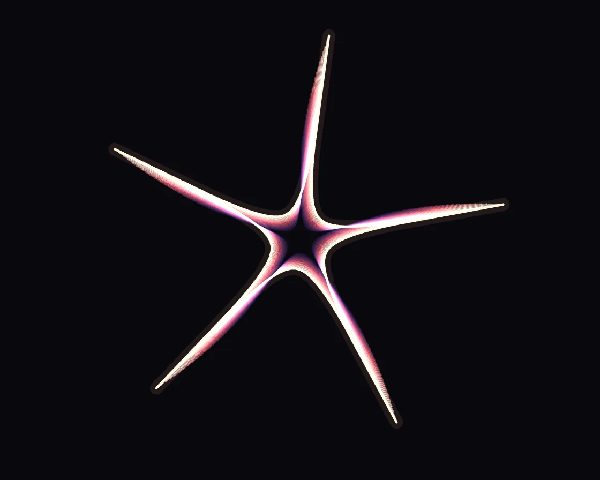

Superformula
Superformula is a Canvas effect: Gielis superformula outlines blended radius by radius, echoed into ribbons. One plain JavaScript file with no dependencies; add it with npx motion-library add superformula.

Open it live, tune it and copy the code
What is Superformula?
A star morphs into a square, gear, triangle and flower, trailing fading nested echoes. The pointer sets symmetry and sharpness, from spiky star to round flower.
How does Superformula work?
Gielis’s superformula sampled at 720 angles and normalised; the morph eases radius by radius, and each echo is an earlier frame drawn slightly smaller.
How do I add Superformula to my website?
- In your project folder, run
npx motion-library add superformula. It writesanimations/superformula.js. Needs Node 18 or newer. - Import it and call it with a container element that has a size:
import fx from './animations/superformula.js'; const stop = fx(document.querySelector('#hero')); - Call
stop()to clean up, for example when a component unmounts.
Every setting below is also a flag, so you can install it already tuned: npx motion-library add superformula --echoes 40.
What settings can I tweak?
| Setting | Flag | Default | Range | Step |
|---|---|---|---|---|
| Echoes | --echoes | 22 | 1 to 40 | 1 |
| Speed | --speed | 1 | 0.2 to 3 | 0.05 |
| Hold (s) | --hold | 1.6 | 0.2 to 5 | 0.1 |
Specifications
- Renderer
- Canvas 2D
- Category
- Generative & math
- Dependencies
- None
- File size
- 7.0 KB, unminified
- Interactive
- Yes: it responds to the pointer
- Reduced motion
- Respects prefers-reduced-motion
- Licence
- MIT-0: use it anywhere, no credit needed
Source code
// Superformula: Johan Gielis’s one equation for a whole family of shapes,
// r(φ) = (|cos(mφ/4)/a|^n2 + |sin(mφ/4)/b|^n3)^(−1/n1). m sets the symmetry, the n’s pinch or swell the sides, so
// one formula gives stars, rounded polygons, petals and gears. Here it glides from shape to shape: each outline is
// sampled, normalised and blended radius by radius, and a stack of delayed echoes turns the morph into a ribbon.
// The pointer sets m (symmetry, left to right) and n1 = n2 = n3 (top: spiky star, middle: round, bottom: flower).
const PARAMS = { echoes: 22, speed: 1, hold: 1.6 };
export default function (stage) {
const canvas = document.createElement('canvas');
canvas.style.cssText = 'position:absolute;inset:0;width:100%;height:100%;display:block';
stage.append(canvas);
const ctx = canvas.getContext('2d');
const reduce = matchMedia('(prefers-reduced-motion: reduce)').matches;
let W = 0, H = 0, D = 1;
const resize = () => { D = Math.min(devicePixelRatio, 2); W = stage.clientWidth || 1; H = stage.clientHeight || 1; canvas.width = W * D | 0; canvas.height = H * D | 0; };
const ro = new ResizeObserver(resize); ro.observe(stage); resize();
const S = 720;
const SHAPES = [[5, .3, .3, .3], [4, 12, 15, 15], [7, 2, 8, 4], [3, 4.5, 10, 10], [8, .6, 1, 8], [6, 1, 7, 8], [12, 15, 20, 3], [2, 1, 4, 8], [16, .5, .5, 16], [5, 2, 6, 6]];
const tables = SHAPES.map(([m, n1, n2, n3]) => {
const r = new Float32Array(S); let mx = 0;
for (let i = 0; i < S; i++) {
const p = i / S * Math.PI * 2, a = Math.pow(Math.abs(Math.cos(m * p / 4)), n2), b = Math.pow(Math.abs(Math.sin(m * p / 4)), n3);
r[i] = Math.pow(a + b, -1 / n1); if (!isFinite(r[i])) r[i] = 0; mx = Math.max(mx, r[i]);
}
for (let i = 0; i < S; i++) r[i] /= mx; return r;
});
const ease = x => x < .5 ? 4 * x * x * x : 1 - Math.pow(-2 * x + 2, 3) / 2;
const MORPH = 1.6;
// the shape at time t: hold, then an eased radius-by-radius blend into the next table
function at(t, out) {
const cyc = PARAMS.hold + MORPH, k = Math.floor(t / cyc), u = t - k * cyc;
const A = tables[((k % tables.length) + tables.length) % tables.length], B = tables[(((k + 1) % tables.length) + tables.length) % tables.length];
const f = u < PARAMS.hold ? 0 : ease((u - PARAMS.hold) / MORPH);
for (let i = 0; i < S; i++) out[i] = A[i] + (B[i] - A[i]) * f;
return out;
}
const buf = new Float32Array(S);
// steering: the shape for the pointer's m and n, between two whole m's blended radius by radius so it stays closed
const tA = new Float32Array(S), tB = new Float32Array(S), front = new Float32Array(S);
function table(m, n, out) {
let mx = 0;
for (let i = 0; i < S; i++) {
const p = i / S * Math.PI * 2, a = Math.pow(Math.abs(Math.cos(m * p / 4)), n), b = Math.pow(Math.abs(Math.sin(m * p / 4)), n);
let r = Math.pow(a + b, -1 / n); if (!isFinite(r)) r = 0; out[i] = r; if (r > mx) mx = r;
}
for (let i = 0; i < S; i++) out[i] /= mx || 1;
}
// the echoes need the pointer's past shapes: a ring of tables, one every TICK seconds
const TICK = 1 / 40, RING = 88, ring = Array.from({ length: RING }, () => new Float32Array(S)), rma = new Float32Array(RING);
let head = 0, filled = 0, lt = 0, lastTick = 0;
let tx = .5, ty = .5, mx = .5, my = .5, ma = 0, lastMove = -1e9;
const onMove = e => { const b = canvas.getBoundingClientRect(); tx = (e.clientX - b.left) / b.width; ty = (e.clientY - b.top) / b.height; lastMove = performance.now(); };
const onLeave = () => { lastMove = -1e9; };
canvas.addEventListener('pointermove', onMove); canvas.addEventListener('pointerdown', onMove); canvas.addEventListener('pointerleave', onLeave);
let raf, last = performance.now(); const t0 = performance.now();
function frame(now) {
const dts = Math.min(.25, (now - last) / 1000), dt = Math.min(.05, dts); last = now;
const t = reduce ? 0.5 : (now - t0) / 1000 * PARAMS.speed;
const live = now - lastMove < 2500;
if (live && ma < .01) { mx = tx; my = ty; }
const k = 1 - Math.exp(-dt * 14);
mx += (tx - mx) * k; my += (ty - my) * k; ma += ((live ? 1 : 0) - ma) * (1 - Math.exp(-dt * (live ? 6 : 2.5)));
if (!live && ma < 1e-3) ma = 0;
if (ma > 0) {
const m = 3 + Math.max(0, Math.min(1, mx)) * 9, m0 = Math.min(11, Math.floor(m)), f = m - m0, fs = f < .3 ? 0 : f > .7 ? 1 : (f - .3) / .4;
const n = Math.exp(Math.log(.35) + (Math.log(9) - Math.log(.35)) * Math.max(0, Math.min(1, my))), w = fs * fs * (3 - 2 * fs);
table(m0, n, tA); if (w > 0) table(m0 + 1, n, tB);
for (let i = 0; i < S; i++) front[i] = w > 0 ? tA[i] + (tB[i] - tA[i]) * w : tA[i];
}
lt += dts;
while (lastTick + TICK <= lt) { lastTick += TICK; if (ma > 0) ring[head].set(front); rma[head] = ma; head = (head + 1) % RING; filled = Math.min(RING, filled + 1); }
ctx.setTransform(D, 0, 0, D, 0, 0);
ctx.globalCompositeOperation = 'source-over';
ctx.fillStyle = '#09080d'; ctx.fillRect(0, 0, W, H);
ctx.globalCompositeOperation = 'lighter'; ctx.lineJoin = 'round';
const R = Math.min(W, H) * .43, cx = W / 2, cy = H / 2, n = Math.round(PARAMS.echoes);
for (let e = n - 1; e >= 0; e--) {
const te = t - e * .05, f = e / Math.max(1, n - 1);
at(te, buf);
// blend in the pointer's shape from the same moment, so a quick move leaves a ribbon behind it
let wl = e === 0 ? ma : 0, L0 = front, L1 = front, fr = 0;
if (e > 0) {
const back = (lastTick - (lt - e * .05)) / TICK;
if (back < 0) wl = ma;
else { const b0 = Math.floor(back); fr = back - b0;
if (b0 + 1 < filled) { const i0 = (head - 1 - b0 + RING * 2) % RING, i1 = (i0 - 1 + RING) % RING; L0 = ring[i0]; L1 = ring[i1]; wl = rma[i0] + (rma[i1] - rma[i0]) * fr; } }
}
if (wl > 0) { const ws = wl * wl * (3 - 2 * wl); for (let i = 0; i < S; i++) buf[i] += (L0[i] + (L1[i] - L0[i]) * fr - buf[i]) * ws; }
const sc = R * (1 - f * .55), rot = te * .12 - Math.PI / 2;
ctx.beginPath();
for (let i = 0; i <= S; i++) { const j = i % S, p = j / S * Math.PI * 2 + rot, r = buf[j] * sc; i ? ctx.lineTo(cx + r * Math.cos(p), cy + r * Math.sin(p)) : ctx.moveTo(cx + r * Math.cos(p), cy + r * Math.sin(p)); }
ctx.closePath();
// echoes run from hot white-gold at the front to deep violet at the back
const c0 = [255, 236, 200], c1 = [255, 96, 120], c2 = [92, 60, 200];
const c = f < .5 ? c0.map((v, i) => v + (c1[i] - v) * f * 2) : c1.map((v, i) => v + (c2[i] - v) * (f - .5) * 2);
ctx.strokeStyle = `rgba(${c[0] | 0},${c[1] | 0},${c[2] | 0},${e === 0 ? .95 : .55 * (1 - f) + .08})`;
ctx.lineWidth = e === 0 ? 2.2 : 1.2; ctx.stroke();
if (e === 0) { ctx.strokeStyle = 'rgba(255,170,140,.10)'; ctx.lineWidth = 12; ctx.stroke(); }
}
ctx.globalCompositeOperation = 'source-over';
raf = requestAnimationFrame(frame);
}
raf = requestAnimationFrame(frame);
return () => { cancelAnimationFrame(raf); ro.disconnect(); canvas.removeEventListener('pointermove', onMove); canvas.removeEventListener('pointerdown', onMove); canvas.removeEventListener('pointerleave', onLeave); canvas.remove(); };
}